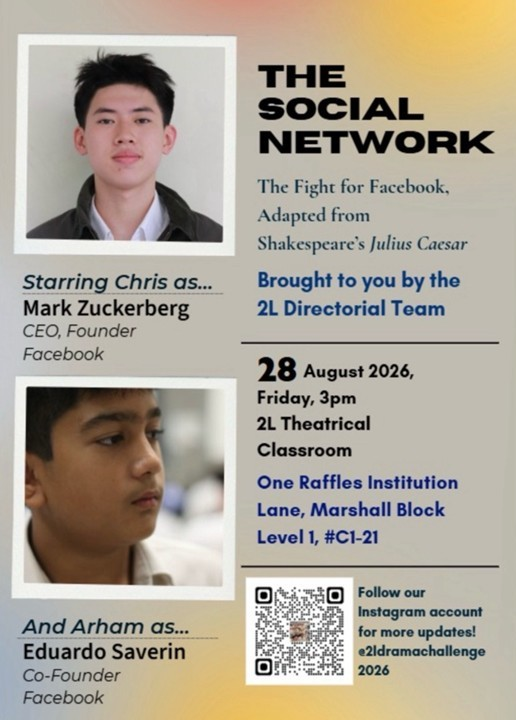

Comprehensive tracking of scriptwriting, set design, publicity & technical operations.
[ The Social Network: The Fight for Facebook, Adapted from Shakespeare's Julius Caesar ]
This production is a modern corporate and tech adaptation of Shakespeare's Julius Caesar. It explores key themes of power, betrayal, loyalty, ambition, and tech rivalry through the lens of Facebook's founding and the conflict between Mark Zuckerberg, Eduardo Saverin, and the Winklevoss brothers.
| Name | Contribution | Effort | Comments |
|---|---|---|---|
| Michael | Wrote the first draft of the script with Yashdeep and the other scriptwriters. Did research on real life events on adaptation. Gave critique and joined multiple group discussions. Wrote the playwright's message for program booklet (“Our adaptation demonstrates that power cannot be consolidated by being honourable alone through the contrasting journeys of the Winklevoss brothers and Zuckerberg. While the Winklevoss brothers believe that their legitimate claim and sense of honour will ultimately secure justice, Zuckerberg’s ambition, opportunism and ability to act decisively allow him to gain and maintain power despite the moral ambiguity of his actions. By mirroring the conflict between Brutus, Caesar and the conspirators, our adaptation shows that honour and loyalty may influence people’s choices, but power ultimately depends on how individuals recognise opportunities, navigate relationships and act upon their ambitions.” |
High | Michael did a job well done in being involved in scriptwriting while being a stalwart—consolidating and joining fruitful group discussions. Michael demonstrated consistent effort and commitment as part of the Playwright team throughout the Drama Challenge. He contributed to writing the first draft of the script alongside Yashdeep and the other scriptwriters, while also conducting research into real-life events to ensure that the adaptation was grounded in relevant historical and contextual details. Michael actively participated in multiple group discussions and provided constructive critiques, helping the team refine their ideas and improve the overall quality and direction of the script. He also took on the additional responsibility of writing the playwright’s message for the programme booklet, clearly explaining the adaptation’s central idea of how power, honour and ambition influence the actions of the characters. His willingness to contribute both to the creative writing process and the development of the production’s overall message shows that he was engaged in the project and made meaningful efforts to support the Playwright team. |
| Dingnan | Edited lines from scene 2 and 3 which were originally written by Davis. Gave some of feedback on a few lines. | Low | Dingnan not only did not contribute much to writing the drafts or in the final script and barely participated in most of the discussions(call) that were initiated by Davis or Ojas while giving little constructive feedback. Considering that Dingnan plays a significant role in scriptwriting, being one of the main writers, we have come to a consensus that he did not execute his role well enough. |
| Davis | Davis single-handedly wrote scenes 3 and 5 and even thought about potential concepts that could be used. Moreover, he wrote majority of scene 2, writing the second half of the scene (from the brothers presenting the evidence to Eduardo [Brutus]) for the final draft. In one of the many drafts, Davis wrote scene one in which one line ultimately prevailed to the final draft. Davis wrote a draft for scene 4 (did not pull through). Cut down 400 words from scenes 2,3,4 and 5 in the final draft. Added scene 3. 11 July: Worked on scene 2, removed a lot of unnecessary rhetorical listings, to make it more dramatic and to deliver stronger lines. Shortened the scene by about 100 words. Also made Eduardo and the twins more friendly at the start, to show how they were good friends at the start and to show the development of Eduardo's feelings over time better. Also connected the friendliness to the serious matter of Mark. Gave context for the previously close relationship between Eduardo and the brothers. Changed some parts of scene 4 and 6. 18 July: Merged scene 2 and 3. Wrote an extension for scene 4 based on actor's request to show Mark's loss of power. 19 July: Got a ton of feedback from Mr Gan to use. Added characterisation for Sean in scene 1, Mark's speech. Also amplified Mark's arrogance. 20 July: Wrote scene 2 manipulation again, completely restarting on the structure. Also elaborated on Mark a bit. 21 July: Worked on refining scene 1 and 2 even more. Added Brutus soliloquy and shortened Mark’s speech. Also changed twin’s dialogue in scene 1. 23 July: Wrote scene 5/6 using the 2 different thematic insights. 25 July: Went on a 2-hour call with Yashdeep to edit the script. We combined everybody's versions and their ideas into this script. 26 July: Added a few lines based on final feedback, and changed some lines a bit. Then using Mr Gan's new feedback, I reconstructed Scene 1 (specifically the brother's dialogue as it was AI/mechanic like). Added figurative language to parallel JC. 27-28 July: Worked on scene 2 by adding more figurative speech and changing the mechanical/AI parts. Added more JC references/parallels using figurative imagery. Figurative language includes comparisons to lion cub, ant, and a giant. 31 July-1 August: Worked on scene 3, added JC parallels and more figurative language as well as reworked the AI parts. Edited a bit of scene 5 and 6. 3 August: Received feedback from Mr Gan to apply (Mr Gan said it improved significantly). 10 August: Made Antony soliloquy by trying as much as possible to mirror the figurative language of the original while having a different style. |
Very High | Davis executed his role flawlessly, forming the backbone of most of the scripts that could prove necessary in days to come. He also coordinated most of the project thus far and even outperformed what was expected— taking the initiative to start discussions for roles such as set design and scriptwriting, furthermore, making profitable consultations, discussing for which draft should be the final one. Moreover, Davis participated in making designated chat groups for each category with the purpose of fruitful discussions in each category. Although Davis was not a director, he still took the initiative to allocate manpower to groups that we found were struggling to meet their deadlines and would need help. |
| Ojas | Ojas wrote a lot of the drafts, including a 700- word script of scene 4 and another 1400-word script of scene 4. He also wrote a significant portion of a draft in scene 6, writing 200 words for that draft. 3 June: Started work. First, worked with Davis to create a version of scene 1 and 2 by asking Davis for ideas and then writing the scene. It was used in the early versions of the script but later changed with only a few ideas remaining. 4 June: Worked on making constructive scene-by-scene feedback of the original draft, which felt a bit AI-generated, with too many only “functional” lines. Worked on editing scene 3 (courtroom). 5 June: Made 2 versions of scene 3 for the other scriptwriters to have ideas. 6 June: Removed stage directions that felt like AI-generated (e.g. a beat). 7-9 June: Worked on giving miscellaneous ideas about the script. Mainly gave feedback about characterisation and about how Tyler and Cameron Winklevoss seemed like the same person. Proposed some lines which could change the twins from being one person into two bodies to being distinct enough while still being cassius at the crux of it. 11 June: shortened final scene to about half the words. 25 June: Wrote an intermediary scene between scenes 2 and 3 that act as a catalyst for Eduardo joining the Winklevoss brothers (This got absorbed into the final version of scene 2). Wrote majority of newly added scene 3. 26-30 June: Gave feedback, edited scenes 1-3, gave suggestions for MLS for symbolic parallels to Julius Caesar. 10-15 June: Gave some suggestions to add characterisations, parallels to Yashdeep Julius Caesar and make play more thematically relevant. After 19th July: Wrote some parts of scene 6 and scene 5, mainly shifted to giving feedback and fixes for problems. Worked with Davis to address the issues Mr Gan pointed out in the script and changed those parts to make them thematically relevant and more figurative. After this, Mr Gan found the script much better. Then, worked on cutting scenes to make the play fit within the time limit of 15 minutes after seeing the first rehearsal in term 3 week 4. Worked on giving feedback and edits for figurative language and Sean’s soliloquy, even though it didnt end up in the final script. |
Very High | Since Ojas wrote most of the drafts (3), he was able to give many ideas to the other scriptwriters. More importantly, he was able to actively give the other scriptwriters such as Davis substantive feedback for core concepts which was very effective for the scriptwriters. He has been very consistent at giving detailed criticism and feedback on a line to line or scene by scene basis. |
| Yashdeep | Yashdeep wrote the entire scene 5 of the final draft unassisted (450 words including stage directions). Cut 100 words from scene 1 of the final draft. Yashdeep wrote the first foundational script for the play. Week 1 to 3: wrote the original framework draft by 28 May, which the other scriptwriters wrote lines for the other scenes based of it. Wrote scene 5 by 10 June which was well before the deadline (made it to the final draft). Checked through the other scenes before writing so the tone and character voices stayed consistent. Took feedback from scene 5 to improve on it. Week 4 to 6: shortened scene 1 on 24th June, rephrasing essential sections of the script so a to maintain the most impactful delivery possible. 18th July: Wrote scene, accepting the feedback to improve it, as well as the Sean soliloquy for after the courtroom scene, which made it for the final script. 19th July: Added lines across multiple scenes to sharpen character voice. Discussed with Davis to polish up the script, actively contacting mr Gan to ask for feedback, passing them on to the other scriptwriters. Tried to explain why to keep scene 4 based on feedback from 3rd party sources. Went to 20th August, Friday’s rehearsal and gave feedback on the play and its relevance to the scenes. Summary: - Wrote the entire Scene 5 of the final script independently (approximately 450 words, including stage directions). - Wrote the entire original draft, which served as the framework for the group’s later revisions and development. - Revised Scene 1, reducing it by approximately 100 words to improve pacing and meet the word limit. - Contributed significantly to the development of Scene 4 through writing and revisions. - Provided detailed feedback during the scriptwriting process, particularly in the middle stages, helping to refine dialogue, structure, and overall quality. - Gave feedback on Scene 6 to improve the final script. |
High | Yashdeep ultimately did do his job as a scriptwriter, writing a moderate portion of the final script along with helpful details for the people in sets and in MLS. From our perspective, Yashdeep could have done more such as participating in discussions and giving constructive feedback, but he did his role very well. Yashdeep made a framework to assist the other scriptwriters in their writing, however the other scriptwriters ultimately did not use the framework. Yashdeep’s positive attitude to accept feedback and rework his ideas are a positive trait. |
| Noah (NE) | Wrote Mark’s speech (majority of scene 1) which made it to the final version—during the June holidays. Wrote Scene 4 by 18 July on my own after the class asked for it, then reworked it based on team feedback. Wrote the Sean Antony soliloquy for after the courtroom scene, which is now confirmed for the final script. Added lines across multiple scenes on 19 July to sharpen character voice. Called Davis to polish the whole script together, gave feedback to other scriptwriters, and kept talking to Mr Gan about how to improve it. Also fought to keep Scene 4 in despite the class being split, reworking it around feedback, and making my case for why it should stay. Most recent: Went to recent rehearsals such as this past Friday, 20th August and gave feedback for editing of the script. |
High | Noah’s contribution to scriptwriting is a fair share of work quantity and the quality of his work on the script was excellent. Considering he has a main acting role as Sean Parker (portraying Mark Antony), the amount of work into the script shows the amount of effort he put into it. Moreover, as many of his lines are in the final script, his role was very impactful and crucial to the playwright department. |
| Chris | Suggested ideas of combining all 4 drafts of the script in one draft folder such that it would be easier to discuss for the final draft on 22 July helped to edit a draft of the script. Chris also joined many discussions —giving some feedback and ideas which were instrumental to the process of writing the several drafts contributing to the final script. Chris came up with the idea of Arham’s soliloquy and helped to write part of it. Chris also wrote his own opening speech at the Facebook party that the idea he came up with with Marcus during one of the teams meeting during June holiday. |
High | The idea of consolidating all the different versions of the script made it easier to compare. This played a major part in finalising the script. Moreover, his willingness to participate in discussion shows his significance in the scriptwriting department. |
| Name | Contribution | Effort | Comments |
|---|---|---|---|
| Davis | Davis created a group chat on 30th May to plan about the design of the stage setting, telling the other set designers to sketch out some of their ideas on Procreate — He drew detailed 3D models for scene 1 and 3 as drafts. (Designing the settings of different scenes such as hotels and courtrooms while mentioning the characters. Designing the settings of scene 1 and 3.) On 17th June, Davis started a discussion with Caleb, Ojas, Yijue and Jungwoo through call, discussing whether to do split stage in scene 1 (did not pull through and instead chose lighting effect on the Winklevoss Brothers to achieve the same effect). He has also constantly and frequently start discussions about aspects of the sets, such as where does the characters face, and the effects of it. Davis has tried to host a physical meeting to design the sets, as most of the online meetings he had only had a few people discussing. However, Davis did not attend most of the set design meetings. |
Moderate | From our perspective, Davis is one of the few who takes the most initiative to start discussions for the set design, not only did he propose brilliant ideas such as asking all set design members to sketch out their ideas which contributed to the first few drafts, Davis did much work on the set design, greatly influencing his teammates; encouraging others to start planning the designs through his ideas. Davis has frequently encouraged the team to get started and enforce deadlines, as he realises that there isn’t actually that much time for them to design and build the sets. |
| Jungwoo | Jungwoo, along with Marcus and Yijue collected $3 from every classmate to form the budget for props and set design. More importantly, Jungwoo is the one who stores this money, and thus he is the one that directs what things the budget should be spent on. Along with that, Jungwoo made a list of every prop the set design/prop department had to make. Jungwoo collected all the set design ideas with all the details on how each scene looks as well as the designs on each important prop and items for all the scenes. He made the file quite early on, from around the line holidays to term 3 week 3. Jungwoo did this so that it would build a solid foundation for the sets and props team to start on; teammates in the department would be familiarised with which prop to build and give them an idea on the scale of everything they needed to make—so that they would not get overwhelmed or confused. It took Jungwoo around 3 hours to finalise the file. Jungwoo, along with Caleb and Davis, called for discussions on set design a few times—discussing how each scene would look like based on the script, improving the set design by doing so. As stage manager, Jungwoo runs the backstage of the set, ensuring smooth running of the play during the performance. E.g the setting change in between scenes to be fast and smooth. Jungwoo also sent deadlines and reminders to make sure other designers are on task. Drew designs for scene 1 and 2 which were thoughtful since they fit into the classroom and provoked thoughts (for example, in scene 2, where does Eduardo come in from?) on June 17, thus giving fruitful ideas to the group members on drawing drafts of the design (to create a set of the origin of Eduardo). On 20 June, he released designs for scene 3 and 5. He also went into detail of some of the furniture such as the witness stand for scene 3 and table for scene 1, and started discussions as to what colour to use and what size, etc. He also thought of and planned for how many of each furniture we need. On 3rd July, Jungwoo, Michael, Juntong and came together to the library for a meeting to design the script. On 16 July, Thursday (Gap Day), Jungwoo attended a 2-hour sets making session, he helped by making the bases for the judge stand by piercing small cardboards together. Jungwoo also did an interview with Xian Jun as stage manager. On 17 July, Friday, Jungwoo participated in a 2-hour prop making session. He contributed by making Eduardo’s briefcase with the help of Yash. On 18 July, Saturday, Jungwoo designed the set of the airport scene on his Ipad—adding it to the set design file and later sharing it to the general drama challenge group chat and set design group chat. On 23 July, Thursday, Jungwoo attended another 2-hour sets building meeting and helped make the attachment platform on the judge stand. On 24 July, Friday, Jungwoo attended rehearsal where they practiced all the scenes. In which where Jungwoo managed the sets and video-filming (videos of Cassius vide) as set manager. On 6 August, Thursday, Jungwoo, along with the set design team discussed how sets would look like with Reyansh’s courtroom scene. Jungwoo also cut out cardboards for the sets team to use, e.g rectangular and triangular supports. On 13 August, Thursday, Jungwoo stayed back in school from 2-4.45pm in the Maker-space classroom. During this session, Jungwoo, along with Keefe make the base of of the table, gluing parts together. On 14 August, Friday, Jungwoo stayed back for another session of sets building. He built the entire structure for the stand in which the flight attendant would be at (with the help of Matthew). He also helped make the courtroom tables along with Caleb and Keefe by taping the tables together. Jungwoo actively gave reminders and agendas quite often. E.g reminders for certain divisions like costume making, to send their designs soon, or agenda/ planning for what to do in each maker-space booking. Jungwoo also participated in basically every single discussion the group had, giving his ideas and opinions as well as constructive feedback. On 23rd August, Sunday, Jungwoo bought two party streamers for Mark’s Party (scene 1,2,3). |
Very High | Jungwoo was the person who contributed the most for the sketching and generating of the set designs besides Davis. Moreover, Jungwoo sketched most of the graphic designs, putting utmost effort into his work; going into the smallest details to work out. He was the only one in the group who took initiative to predict and plan out how much furniture was needed such that the budget would not go to waste. Jungwoo was also determined to receive further constructive feedback to improve his sketches and ideas which shows his ambition and initiative. Overall, Jungwoo engaged in every initiative, putting in effort to help out the group in each domain (e.g feedback, planning and discussion), doing what multiple members should have been doing. Therefore, we think that Jungwoo did an exceptionally good job in his role as stage manager. Him being the catalyst of the team highlights his versatility, drive, and dedication. Jungwoo mentioned that the making of Eduardo’s briefcase with Yash was very arduous and challenging due to the different dimensions they had to build accordingly, such that it would be light while looking exactly like a real briefcase. This shows Jungwoo’s superb dedication to set design. Furthermore, he added fancy, vintage-like paper on the surface of the cardboard briefcase to give it a more stylish and realistic vibe while concealing the styrofoam and cardboard colours within. Lastly, Jungwoo went out of his way to buy tape from popular bookstore during his free time all the way at Junction8, using the class’ budget—-this was so that they booths continue building the sets more productively and efficiently during break time. Jungwoos dedication and creativity to plan and build emphasises the amount of effort he put in for all his contributions. Working as the spearhead with so many divisions is no easy job, so we have concluded that Jungwoo has done an excellent job in executing his role in set design and stage manager. Jungwoo took initiative to start discussions for which props were the most important to build. He also started building the props ahead of the other members which clearly shows his ambition. Jungwoo also gave and asked for feedback on the prop designs, making the design better and doing his task of building the props punctually. This shows Jungwoo’s drive for excellence in the props and set design. He was pivotal and reliable during the process of designing. |
| Yijue (Stage Manager) | Helped track production expenditure and identify the props, sets and materials required for each scene. Identified the props: fake plastic cups, champaign, fake apple juice/ribena syrup, microphone, tripod, computer, Sony Ericsson P910, Motorola Razer V3, news camera, news microphone, courtroom documents, board member documents, gavel of judge, gavel base, carry on bag/suitcase/briefcase and newspaper. Also identified which props to build, bring or buy. Consolidated ideas collected from Jungwoo and other team members into clear Sets, Props and Costume planning documents. Initiated the construction of the courtroom background, rostrum, reporter microphones. Also went to ask everyone if they had the available materials. Asked everyone for their availability of time, resources and commitment and gathered manpower. Helped redistribute manpower (e.g. from props -> sets) in suitable times. Constructed parts of the reporter microphones and later helped repair and reinforce them. Helped construct Eduardo’s briefcase. Co-constructed the judge’s stand, witness stand, three courtroom background panels and Scene 1 rostrum. Spray-painted the judge’s stand, witness stand and flight-attendant stand. Attached the court symbol to the judge’s stand. Repaired and reinforced the judge’s stand and witness stand after rehearsal use and destruction from various classmates. Designed and printed the Scene 1 facebook poster. Created and printed the board-member document used as a stage prop. Suggested using a separate rostrum for Scene 1 so that the party and courtroom settings remained visually distinct. Created a 3D model for the proposed gavel base, although the final design was later changed. Helped scout, bring, forage and find materials like cardboard, tape, penknife and wood panels from an intensive search throughout the entire school from places like the printing shop, other classes, dumpster, etc. Stayed back until 7pm on various days to help fill in those who did not finish their jobs, as well as help think of a movement plan. Created the initial draft of the movement plan along with role organisation. Helped ask everyone for their availability for set moving, as well as individually polished the movement plan before handing it to Jungwoo to enact. Also brought 3 ties to school for the actors to select from. |
Very High | Yijue demonstrated consistent high effort and responsibility through his contributions to the Sets team. He helped keep track of the expenditure, ensuring that the team was aware of its spending and could manage the available resources effectively. He also identified the props and materials required for different scenes, showing that he paid attention to the practical needs of the production. In addition, Yijue contributed directly to the construction of important props and set pieces, including part of the reporter’s microphone and briefcase, as well as the judge’s and witness’s stands. He also took the time to spray-paint the stands, helping to improve their overall appearance and suitability for the performance. Overall, Yijue showed good initiative and commitment by contributing to both the planning and hands-on construction of the sets and props, helping to ensure that the production was properly prepared. Yijue contributed across the planning, construction, finishing and repair stages of Sets and Props. He helped translate production requirements into organised plans while also contributing directly to several major set pieces and props. His work on construction, painting, reinforcement and stage documents helped ensure that the physical production was complete and ready for rehearsals and performances. |
| Caleb | Caleb drew a detailed 3D model for scene 1. Participated in many meetings whether online or physical. • Worked with YanZhu and Jungwoo after during the 3rd week of the June Holidays and start preparing and planning on how the podium should look like at the Sheares Block. • Started making the Base of the Podium with Yanzhu and Keefe using cardboard, and glue guns. • Had calls and discussions during the June Holidays on how the Podium for Mark can be used for the judge stand with Davis and Jungwoo and on how the tables should be arranged and used in Scene 1. • Caleb sketched out Scene 1 of our play on Procreate and asked for approval of the sets team. • Attended Maker Space Session after schools on 20th august, Thursday, to finish building the judge stand together with Jungwoo. • Attended another maker space session and complete the witness stand, that was halfway built by Mingze and Keefe. • Caleb tried to make a place where the judge can slam the gavel by putting a sort of rim around the judge stand with Keefe but Yijue changed it the next Maker session. • Stayed back to watch how the drama challenge carry out during recess to ensure the flow of the play and to see whether the sets work with Jungwoo. - Made the courtroom table cover with Keefe. - Made the cover for the three seats during the airport scene with Keefe. - Stayed backed in school to watch drama challenge rehearsals. - Made the first draft of the sets movement plans throughout the scenes in the play. - Help to make the flight attendant stand with Keefe and Jungwoo. - Help painted the “American Airlines” logo on the flight attendant stand together with Yanzhu. - Cut the brown cloth for the party tables so it fits nicely. - Help with the construction of the court room background panels after school in the last week before drama challenge. - Carried out the first draft of the movement plan plan during after school rehearsals. |
High | Caleb has been very willing to get into fruitful discussions despite tight schedules to help discuss elements for the set, showing great understanding of the script and intent effects. Moreover, Caleb demonstrated a high level of effort, dedication and initiative throughout the Drama Challenge, making consistent contributions to the Sets team from the planning stages through to the final rehearsals. He actively participated in numerous physical and online meetings, including discussions during the June Holidays, to plan and refine the design and functionality of the sets. Caleb took the initiative to sketch a detailed 3D model of Scene 1 on Procreate, allowing the team to visualise the proposed arrangement and seek approval before construction began. He also spent significant time working with his teammates to construct the podium, judge’s stand, witness stand and flight attendant stand, often staying back after school and attending Maker Space sessions to complete these set pieces. Beyond construction, Caleb contributed to many smaller but important tasks, such as making table and seat covers, cutting cloth to fit the party tables, painting the American Airlines logo and helping to construct the courtroom background panels. He also took the initiative to develop the first draft of the set movement plans and test them during after-school rehearsals, ensuring that the sets could be moved efficiently between scenes. Caleb even stayed back during recess and after school to observe rehearsals and assess whether the set arrangements worked smoothly with the performance. Overall, Caleb consistently invested his time and effort into both the planning and hands-on construction of the sets, while working closely with his teammates and making adjustments when necessary. His willingness to attend additional sessions, stay back after school and take responsibility for both design and execution demonstrates his strong commitment to the success of the production. |
| Yan Zhu | Yan Zhu is the prop’s leader, managing, facilitating, and setting deadlines for all prop’s designing projects. He was also the leader for set designing for the courtroom scene (scenes 3 and 5). Yan Zhu participated in all set and props design meetings and contributed greatly. Yan Zhu helped lead the building of the judge’s stand from term 3 week 5 to 7, helping to reinforce the stand once every set design meeting; which was very often. Yan Zhu oftentimes helped to repair and reinforce other props and build set designs such as the microphones and cardboard plaque. On the 20th of August, Friday, Yan Zhu stayed back the longest solely for the purpose of boarding up the classroom windows to help improve the lighting and provide a spotlight effect during plays. He did this by himself. Yan Zhu, along with Reyansh, designed airport props such as the boarding gate stand; helping to build and spray paint. Yan Zhu initiated the building of the departure board on flight attendant stand for the airport scene in scene 6. On 27th of August, Thursday, him, and Reyansh continued to paint it, finishing the project. On 28th of August, Friday, before the final performance, Yan Zhu put the finishing touches on the American Airlines departure board and mics with Arham, Reyansh, Ryan, Ethan, and Marcus. |
Very high | Yan Zhu contributed significantly to the set design and prop design department. He has taken a lot of responsibility to lead the props group and gave much effort into his work. Yan Zhu displayed his responsibility through events such as blocking the classroom windows when everyone left after the rehearsals on 20th August. Yan Zhu’s work was not only quantitative but also qualitative. His efforts exceed many of his peers’, and thus we give a high individual score. |
| Keefe | From term 3 week 5 to 7, Keefe helped to build the witness stand and completed the wrap for two tables (for the courtroom scenes) in week 7. Keefe also helped to make a cover for the airport bench in week 8. Keefe attended all important rehearsals and prop/set building meetings, playing a crucial role in helping to repair, reinforce, and build important props for every scene. Keefe actively participates in the rehearsal by practicing transitions in between scene changes; contributing to the set management. During the rehearsal on 25th August, Monday, after school, Keefe helped with building a plaque in the courtroom’s background as a United States court symbol. |
High | Keefe played a vital role in contributing to the set design department. He actively takes part in multiple discussions (in call or prop building sessions), meeting the expectations to brainstorm ideas for suitable props and, designs, and help in building sets/props. |
| Reyansh | Reyansh designed airport props, using glue and multiple cardboard pieces to create many props for the set design (when Eduardo—Arham leaves John.F. Kennedy Airport in scene 6). Reyansh made an American Airlines sign and Eduardo’s (Arham) passport, using cardboard and glue. Helped to make briefcase, just and witness stand + helped Ryan to make 2 judge microphones. Consistently took initiative to get cardboard. Reyansh helped to decorate the briefcase as well as planned and designed the microphones (Mark speech at party scenes 1,2) which were of high quality for the judge and witness stand. He also helped to get cardboard for sets and props. Reyansh helped to build the rostrum for Mark in scene 1 (Facebook Success Celebration) and also provided gravel. Reyansh helped Yan Zhu spray paint the witness stand, judge’s stand and boarding gate stand. Reyansh would also get cardboard from Junction 8 Mall for Jungwoo. |
Very High | Reyansh takes responsibility in his work for set design. He always helps in reconstructing and building props, constantly playing a crucial role in set design. Moreover, his extra role in acting shows the amount of effort he puts into sets despite his acting role. Moreover, Reyansh overall contributed an ample share of work for toward the set design department; showing a positive attitude toward the work he was assigned and meeting all deadlines for building. |
| Noah Tan Yi Ren | Bought cloth but was not used | Low | Noah has not contributed much to this department. |
| Ryan | Ryan made five judge microphones and 4 prototype ones. He also made most of the rostrum for the party scene, stabilising the judge stand and carries the props to be spray painted. On 27th August rehearsal, Ryan helped to repaint all the microphones. |
High | Ryan made five of the most essential props in the drama challenge they were all of high quality and it shows that he has put in a large amount of effort into contributing to set designing. |
| Lucas Chia | Lucas is the head of costume design. Lucas produced the costume designs for Cameron and Tyler Winklevoss. Image of planning in the link below: Planning |
High | Lucas had put a lot of effort into leading the costume design division. He not only produced the costume designs but also took initiative to ask or give constructive feedback for them. Moreover, considering his main role as an actor for Tyler Winklevoss, this shows that he has put in much effort in this department. He not only had to memorise countless lines or learn how to act, he also had to lead the costume design division; starting and finishing the designs independently. |
| Ethan Lum | Designed mark's costume, doing the costumes Gap Day assignment, holding the first costumes meeting, allocating roles of who designs what costumes, acting as the judge, suggesting edits to the script to save time and for better symbolism. Helped to paint the speaker props, spray painting mark's stand for the speech, gather people's costume designs and compiling them. | Moderate | Ethan made a moderate and meaningful contribution to the Drama Challenge, particularly through his involvement in the Costumes team. He took responsibility for designing Mark’s costume, completing the Costumes Gap Day assignment, and organising the first costumes meeting where he helped allocate responsibilities for designing the different costumes. He also contributed beyond costumes by acting as the judge and suggesting edits to the script to improve its symbolism and reduce the overall performance time. In addition, Ethan assisted with practical tasks such as painting the speaker props, spray-painting Mark’s speech stand, and collecting and compiling his teammates’ costume designs. These efforts show that Ethan was willing to contribute across different areas of the production and take on additional responsibilities when needed. However, his overall contribution remained moderate, and he could have taken greater initiative and been more consistently involved throughout the preparation process to make a stronger impact on the final production. |
| Matthew | Matthew assisted the Sets team with constructing the airport stand/set, helping to assemble and prepare the props and structures needed for the performance. Assisted the Sets team with transporting cardboard and other materials to the FLP Centre, ensuring that materials were safely moved and properly organised for use. Matthew helped to build the airport attendant rostrum. |
Moderate | Matthew made a moderate and valid contribution to the Sets team by assisting with the construction of the airport stand and helping to assemble and prepare the necessary props and structures for the performance. He also assisted in transporting cardboard and other materials to the FLP Centre, ensuring that the materials were moved safely and were available for the team's use. These efforts show that Matthew was willing to contribute when needed and supported the Sets team in completing some of its practical tasks. However, his overall involvement could have been greater, as he could have taken more initiative in identifying tasks that needed to be done and contributed more consistently throughout the preparation process. By being more proactive and taking on additional responsibilities, Matthew could have made a stronger contribution to the Sets team and the overall production. |
| Yash | Yash helped finalise the design and materials that was needed to create the brief case and even constructed it, including the actual briefcase and its handle. Then later, he also got coloured paper to decorate the briefcase. Yash also started making the head of the gavel before knowing Reyansh would bring a gavel. Yash also assisted in the design and materials to make the two microphones for the news/press people and also updated a table with a timeline to show the progress of the props in the Props document created by the props team. Later, Yash brought the computer and the two old phones props that he already had at home to school. He had also helped in printing out the different fictional documents needed in the play as he realised that they were missing and some still had to be printed. I was able to find this out as before the drama challenge, Yash was making sure the props division had all their props and materials and finalising what still had to be done. Yash also helped in sets where he provided help in creating the left side of the courtroom background with Caleb and Dingnan and later also helped in adding in the final touches, which was the logo of the American courtroom, on the judge stand as well as helping to add supports for the background of the courtroom set. During the actual drama challenge Yash was part of set change and helped in providing props like the phones to Arham and Lucas while making sure Gregory got one old looking phone from Noah too. He also helped in bringing the judge stand in and out and organised the state of the class outside so that set changes could be more efficient. | Very High | Yash demonstrated a high level of effort, initiative and responsibility throughout the Drama Challenge, making consistent contributions to both the Props and Sets teams. He took the initiative to finalise the materials and design needed for the briefcase and personally constructed the briefcase and its handle, later obtaining coloured paper to improve its appearance. He also proactively started constructing a gavel before knowing that another teammate would provide one, showing his willingness to prepare props in advance rather than waiting for others. Yash contributed to the design and construction of the two microphones for the news and press characters, while also maintaining a timeline in the Props document to keep track of the progress of different props. He further went beyond the expected responsibilities by bringing a computer and two old phones from home and helping to identify and print missing fictional documents needed for the performance. His effort was also evident in the Sets team, where he helped construct the courtroom background, add finishing details to the judge's stand and reinforce the set with additional supports. During the actual performance, Yash remained actively involved in set changes, ensuring that actors received the correct props, helping to move the judge's stand, and organising the classroom area outside so that transitions could be carried out more efficiently. Overall, Yash consistently showed initiative by identifying what needed to be completed, preparing materials in advance and stepping in to help across different areas of the production. His willingness to contribute both behind the scenes and during the performance demonstrates a strong level of dedication and commitment to the success of the Drama Challenge. |
| Juntong | -made the courtroom background with help from Lucas, Jungwoo and Yijue, made supports for them too. -Spray painted witness and judge stand. -Drew drafts for the set. On 27th August, Thursday, Juntong helped to build the court background along with Caleb and Keefe. However, one problem was that Juntong would wander off and neglect building sets during the weeks of drama challenge. But towards the end, Juntong started to help out greatly. For example, building the courtroom background independently when his teammates took breaks. |
High | Juntong played a solid role in bringing the courtroom background to life. Working alongside Lucas, Jungwoo, and Yijue, he not only helped construct the main set pieces but also took on the responsibility of creating supports to ensure everything was structurally sound. His hands-on work included spray painting the witness and judge stands, adding practical finishing touches that made the set functional and visually cohesive. Beyond the physical construction, Juntong contributed creatively by drawing up drafts for the overall design, helping to plan how different elements would come together. Through a combination of design work, painting, construction, and ongoing support, Juntong demonstrated a well-rounded contribution that was essential to the set's completion. |
| Keegan | Keegan Helped to build the rostrum. Helped to paint microphones on 27th August and also helped cut out the Front-of-house posters. On 28th August, Keegan helped to put up the front-of-house posters outside of the classroom. |
Low | Keegan did not contribute much, but his small efforts in set design are valid. |
| Zihan | 1: brought a whole set of costume for Noah Tan (Nuo En) which he did not wear. 2. Constantly helped with set change. 3: attended all costumes meetings and gave suggestions. |
Moderate | Zi Han has contributed moderately. His initiative to bring the costume, even though they were not used, helped the department to use as backup. Sets and helping its set change makes his efforts valid. |
| Dingnan | Props: Helped make the microphones (scrapped) and the suitcase. Bought the paper for the suitcase. Made measurements for the 3d oriented judge gavel. Sets: Helped spray paint the first judge stand. Helped make courtroom background. Costumes: Brought Arham’s costume. Brought own costume. |
Moderate | Dingnan made a moderate contribution to the Drama Challenge by assisting with several practical tasks within the Sets and Props teams. He helped with the construction of the microphones and suitcase, and also took the initiative to purchase the paper needed to complete the suitcase. In addition, he contributed to the planning of the judge’s gavel by taking measurements for its 3D-oriented design. These contributions were useful in helping the team prepare the necessary props for the performance and showed that Dingnan was willing to assist when tasks needed to be completed. However, his overall effort could have been greater, as he could have taken more initiative to identify additional tasks and contributed more consistently throughout the preparation process. Taking on more responsibilities and being more actively involved would have allowed him to make a stronger contribution to the overall production. |
| Name | Contribution | Effort | Comments |
|---|---|---|---|
| Chris | Made a high quality “honourable” edit to post on Instagram on 15th of July. This formed the basis that attracted the public. This helped to engage more people in our school to come for the performance. Moreover, this initiative had also influenced the publicity team on what type of videos or pictures to post online. Helped manage the drama challenge Instagram account. |
Moderate | Chris had put in much effort to making the “honourable edit” on Instagram. It not only was relevant to our theme, but it also appealed to many, gaining the likes of more than 70 people. Chris demonstrated great dedication and initiative in creating the “honourable” edit for the Instagram account despite his role as a main actor (which meant that he had to prioritise learning how to act properly while memorising countless lines). This shows that he put significant effort into ensuring that the edit was both visually appealing and relevant to our theme (power cannot be consolidated through honour alone), which helped attract the attention of the public; staying with us until the end of the Drama Challenge. Furthermore, Chris’ work provided the publicity team with a useful example of the type of engaging content that could be posted online. His contribution helped increase awareness of our performance and encouraged more students to take interest in the class’ production. |
| Jayden | On 17th August, Jayden made a poster of extremely high cinematic quality, obtaining the favour of the Instagram media, gaining many likes and positive comments. Jayden did this by staying back in class to independently edit the poster. In the poster, Jayden chose to edit the eyes in different characters such as Arham’s Eduardo the show the various emotions and emphasise the intensity of the rivalry and friction between characters. Jayden also helped to make the programme booklet cover. Helped manage the drama challenge Instagram account. Jayden contributed by giving feedback and ideas on how to appeal to the public through Instagram posts. This set the backbone for our posting initiatives and ideas. Attended all rehearsals to take videos and pictures. On 28th August, Friday, Jayden helped to put up several front-of-house posters outside the classroom, helping to attract many other students before the final performance, publicising the play. |
Moderate | Jayden played a vital role in publicising our play through his dedication and initiative. He took the time to create high quality, eye-catching posters that helped generate interest and awareness for the production. What stood out most was his willingness to stay back after school to work independently without being asked, showing great commitment and responsibility. Additionally, the poster he made had gained close to a hundred likes, meaning it successfully attracted the public interest and engagement; his efforts made a meaningful contribution to the success of publicity and demonstrated his reliability and strong work ethic. |
| Xian Jun | Xian Jun also attended all rehearsals to take multiple pictures; he used a high-quality camera to do so. Xian Jun also takes pictures for only a few meetings after school. In term 3 week 8, Xian Jun followed the deadline timeline, finishing up the first poster and in poster one, Xian Jun chose Chris (Mark Zuckerberg—Caesar) to be smiling to show his confidence while putting a picture of Arham (Eduardo Saverin—Brutus) to be in a shady lighting while giving off a lost and unconfident vibe. This shows the contrast between both character’s foreshadowing the characters’ endings. In poster 2, His poster was not approved to be put up. Xian Jun made the front- of- house poster about Mark Zuckerberg’s “success story”. Approved to be put up. On 27th August, Thursday, Xian Jun stayed back after school from 3.40p.m to 7.20p.m in school. This was to complete the printing of posters. |
High | Xian Jun has demonstrated a high level of commitment and initiative throughout the Drama Challenge. He consistently went beyond his basic responsibilities in the publicity department by actively communicating with other departments, keeping track of deadlines, organising tasks and ensuring that the team remained on schedule. He also took the initiative to attend rehearsals and meetings to capture high-quality photographs and videos, which were later used for Instagram posts, trailers and other publicity materials, playing a vital role in photography. His willingness to stay back after school to complete posters, tickets, decorations and front-of-house materials further demonstrates his dedication to ensuring that the production was well-prepared. Xian Jun also showed creativity and thoughtfulness in his poster designs, carefully considering how the use of lighting, expressions and symbolism could represent the characters and themes of the play. Overall, his consistent effort, proactive communication and willingness to take on additional responsibilities made a valuable contribution to both the publicity team and the success of the overall production. |
| Marcus Chong | Just before the performance, Marcus made the transitional video along with Huon; both to publicise the play online for others to see and immerse the audience during the performance during the set transitions between scenes 2 and 3 (party and 1st courtroom scene, respectively.) He had to do this all while directing the actors and MLS during the last rehearsal. Therefore, asking for Huon’s help to finish the transitional video. The video helped to distract the audience from the set transitions and further immerse them in the play. Designed directorial team and actor posters. Made tickets and sent invitations to teachers and other schoolmates, helping to publicise the play. Marcus designed the Facebook poster cover, using it in front of house decoration. Marcus used his creative vision to direct the arham honourable edit and took the videos on his own. As the publicity head, he sent out task on MS teams and tagged the people who needed to do work. On 28th August, Friday, Marcus helped to put up several front-of-house posters outside the classroom, helping to attract many other students before the final performance, publicising the play. |
Very High | Marcus helped greatly to publicise the process towards the performance. He mostly helped in the multimedia division to promote and advertise 2L’s performance, playing a vital role in appealing to the public. Marcus demonstrated significant effort and dedication throughout the Drama Challenge, especially during the final stages of preparation when time was limited. Despite having the responsibility of directing the actors and MLS during the last rehearsal, he still took the initiative to work on the transitional video with Huon to ensure that it was completed before the performance. Recognising that there was a lot to be done within a short period of time, Marcus was willing to ask for and work with Huon’s help so that the video could be completed effectively. He also put in additional effort outside of directing by creating posters for the directorial team and actors, preparing tickets, and sending invitations to teachers and schoolmates to help promote the production. These contributions show that Marcus was willing to take on responsibilities beyond his main role and dedicate his time and energy to different aspects of the production. His perseverance, initiative and willingness to contribute wherever needed played an important role in ensuring that the final performance and its publicity were properly prepared. |
| Huon Lim | Huon is the main manager for the class’ Drama Challenge Instagram. He helped to post many photographs of the process in all departments towards the final play (keeping up the constant engagement with the audience) but also made various videos such as trailers and videos to invite more people to the play. For example, the trailer helped to emphasise the intensity of the performance, making the public more attracted, engaged, and eager to watch the play. He made many posts to introduce the main cast, helping to familiarise the audience with the general story and theme. Furthermore, Huon consistently posted photographs of rehearsals to keep the audience updated; showing the class’ dedication which would indirectly attract the public. Huon independently started initiatives for what videos to post. One example was a post to invite people to the class’ play. This video gained 80 likes. Huon also contributed by helping Marcus in making the transitional video that was inputted in between scenes 2 and 3 (party scene to courtroom scene)—helped to keep the intensity of the play constant to not lose the immersive effects of the play while distracting the audience from set transitions. During rehearsals, Huon has to balance between documenting and managing the publicity team in recording and taking pictures. For example, Huon initially asks Matthew to record such that he could take time off to continue documenting the rehearsals. However, Huon still oversees the process of recording and taking pictures such as teaching Matthew how to record or when Xian Jun should take a photo (for a more cinematic and visually appealing photograph. Furthermore, Huon mostly takes the initiative to record if no one is suitable to do so properly. He facilitates the publicity team while directing the documenting—telling Eli the important contributions to write down during the rehearsals. |
Very high | Huon demonstrated a high level of effort, initiative and responsibility throughout the Drama Challenge, particularly in managing the class’ Instagram and coordinating the publicity team. As the main manager of the Instagram account, he consistently put in time and effort to post photographs, rehearsal updates, cast introductions, trailers and promotional videos, ensuring that the audience remained engaged and informed about the production. He also independently came up with ideas for promotional content, such as the invitation video which received 80 likes, showing his willingness to take initiative rather than simply waiting for instructions. During rehearsals, Huon had to balance documenting the production with overseeing the publicity team, often taking on additional responsibilities when others were unable to record or photograph effectively. He also guided his teammates by teaching them how to record, advising Xian Jun on when to capture more cinematic shots, and directing Eli on which important contributions to document. Furthermore, Huon contributed his time to help Marcus complete the transitional video between Scenes 2 and 3, helping to maintain the intensity and immersion of the performance. Overall, Huon consistently went beyond his basic responsibilities, dedicating significant time and effort to both publicity and documentation while supporting his teammates, demonstrating strong initiative, leadership and commitment to the success of the production. |
| Matthew | Designed and created two posters, contributing to the visual promotion and presentation of the production. Helped to record videos of rehearsals, capturing key parts of the practice sessions for the team to review and make improvements. -helped huon record the interview with MLS ICs—Jason and Yijue. |
Moderate | Matthew made a moderate contribution to the Drama Challenge by assisting with several tasks across the publicity team. He designed and created two posters, contributing to the visual promotion of the production, He also assisted with recording rehearsal videos, which provided useful footage for the team to review and improve from. While these contributions were helpful and showed that Matthew was willing to support different aspects of the production, he could have demonstrated greater initiative and consistency throughout the process. Taking on more responsibilities, contributing more actively during rehearsals and proactively looking for ways to support his teammates would have allowed him to make a stronger overall contribution to the Drama Challenge. |
| Yijue | Independently designed and developed the production’s multi-page publicity website at 2l-dc.vercel.app/programme.html Singlehandedly created the programme booklet’s content on the website (with input from other people for messages) as well as the website Created the secondary 2l-dc.vercel.app/post.html with a fake facebook replica to help with worldbuilding and the immersive experience Created the closing archive 2l-dc.vercel.app/index.html for a consolidation of the entire drama challenge as well as links to all other pages Integrated production information, publicity videos and transitional content into the website Designed the front of house decorations with xianjun, designed the tickets, courtroom invitation card (merch) and one marketing poster all with consistent visual identity with the website Designed and printed 30 tickets with xianjun Designed and produced 6 merchandise copies Printed all 5 copies of the poster, consisting of 30 total posters Stayed back until around 7pm on multiple days with xianjun to finish up the majority of publicity’s content |
Very High | Yijue demonstrated strong initiative and effort through his contributions to the publicity and technical aspects of the Drama Challenge. He independently developed a Vercel website to organise and showcase the publicity videos created for the production, including videos that were posted on Instagram and used during the transitional scenes. By taking the initiative to develop the website himself, he provided an additional platform for the production’s promotional materials and helped make the publicity content more accessible and organised. Yijue also took responsibility for creating the tickets that were printed and distributed to teachers, contributing to the professional presentation of the final production. Overall, his willingness to independently take on technical and design-related tasks demonstrates initiative and a commitment to supporting the production beyond his main responsibilities. Yijue independently developed the production’s digital publicity platform and helped establish a consistent visual identity across the website, tickets, posters, merchandise and front-of-house materials. His contribution extended beyond designing the materials to producing and printing them in time for the performance. This significantly strengthened both the online presentation and the audience’s physical arrival experience. |
| Name | Contribution | Effort | Comments |
|---|---|---|---|
| Yip Cheong | Yip Cheong found and provided the MLS team with an applause sound, Nokia sms notification ding sound and courtroom background noises: shuffling around and murmuring sound effects, party aftermath sound effects, sad and reflective music for Eduardo's speech, upbeat music for during the party. He also provided them with airport, courtroom, party, and aftermath party background. However, most of them did not pull through to the final script which included stage directions for MLS. | Moderate | Yip Cheong had contributed sufficiently to MLS. His work of creating multiple sounds to help with the play shows his effort put into helping the MLS team. However, since most of those sounds could not proceed further into the final script, it shows that his work was not as qualitative as it should be. |
| Jasom | -Jason not only directed lighting but also led his teammates such as Mingze to control the main classroom lights and Yijue for shutter lights. Jason would also put in the effort to go around the class to set the lightings on characters in different angles such that it would be more impactful to the scene; the lighting helped greatly by showing the different intensities of the atmosphere and ambience. Moreover, Jason plays the role of the Nokia message voice actor while managing the lights. Further showing the effort he put in to contributing for MLS, playing a crucial role in the setting of the play’s lighting. - Jason did MLS lights and some sound script with Ming Ze - He asked around for spotlights - started rehearsals. However, they only practiced once with floodlights as the other times they could only book classes with very late timings. - touches up on the script every week, as ideas come from rehearsals - Finalise and added stage directions or ideas that directors and others suggested or wanted - finally finalised script, to practice in the last week (term 3 week 9) - was made manager of the lights segment of MLS by Yijue so he had to organise what members did what part. For example, Ming Ze was eager to do class lights, so Jason directed him to class lights and directed Mingze how to do so. - also arranged discussions through calls during rehearsals so that we can communicate better and remind each other. - in the last week, Jason finalised touches on the MLS script even more based on others and own ideas and make sure everyone knows what they are doing, during normal rehearsals. - wrote word document for Huon, a documentarian on creative decisions behind light effects. Moreover, he did an interview for the same reason with Huon along with teammate Yijue: Scene 1: -Spotlight on anyone who talks, except Tyler and Cameron (no one cares) and the lights also dim when Mark is “thanking” them to show lack of care -Mark’s spotlight: Shows his power and ambition. He is literally placed at the centre, just like he sees himself as the centre of Facebook. -Eduardo’s weak spotlight: Shows that although Eduardo is still important, he is becoming powerless and easily manipulated. -lights dip when he says kill because of how they are turning “dark” side -lights are only on The twins when they are plotting, as if it’s the only way they get attention Scene 2: -After Mark leaves, the lighting changes and the spotlight moves onto the twins because the centre of attention and some power has shifted. While Mark is present, he controls the scene. Once he leaves, the twins become the dominant figures. -Growing shadow behind Mark: Represents Mark’s growing influence and the way his ambition starts to overshadow everyone else. And him turning into a giant. He is literally shadowing the others -When the twins begin manipulating Eduardo, weak spotlight on Eduardo. He is present, but powerless. -Lights turning off show Eduardo slowly turning to “dark side” as the lights disappear, his belief in their honour disappears too. -when Eduardo is left alone, spotlights on the twins are brighter showing how they forge the messages and manipulated him with the public Scene 3: -The brighter spotlight on mark when he claims to “be the sun represents” Mark's own perception of himself. -When Eduardo enters the courtroom, the lighting changes onto him, as now everyone is paying attention to him, this is also contrast to when he was powerless, and only when he rebelled did he gain attention and power. -Before Eduardo enters, Mark believes he still controls everything, but when he walks in he loses the spotlight, which stands for confidence and his ego diminishing a bit Scene 5: -During his reflection at the end, the sound is sad and reflective and as he says the persons name, lights slowly diminish directly showing his faith in people being honourable as he realises none of them were. |
High | Jason demonstrated significant effort, dedication and responsibility throughout the Drama Challenge, consistently attending all rehearsals and playing a crucial role in managing the lighting for the production. Alongside Yijue, he took responsibility for directing the lighting throughout the rehearsals while also guiding his teammates, such as Mingze in controlling the main classroom lights and Yijue in managing the shutter lights. Jason went beyond simply operating the lights by actively moving around the classroom and experimenting with different lighting angles to ensure that the characters and scenes were presented as effectively and dramatically as possible. His willingness to put in extra effort to adjust and refine the lighting contributed greatly to creating different atmospheres and intensities throughout the play. Furthermore, Jason took on an additional responsibility as the Nokia message voice actor while continuing to manage the lighting, demonstrating his ability to handle multiple roles at once. Overall, Jason’s consistent attendance, initiative and willingness to take on additional responsibilities show his strong commitment to the production and made his contributions to the play especially valuable. |
| Yijue | Led the early MLS production process by creating the initial stage-direction and technical cue script, later refined with edits from Marcus. Delegated MLS responsibilities and helped the team begin production. Built a custom soundboard app to improve the speed and reliability of sound-effect playback. Operated sound effects during every rehearsal and the final performances. Sourced or created 19 named audio-visual assets, including three music tracks, three applause cues, nine screen images and four phone sound effects. Yijue controls the general lighting of the set, played the sounds effects of the play and created a soundboard ‘app’. He also helped to modify and finalise the MLS plans. Created all the projection background for the projector, created a script to coordinate the MLS members. Yijue created soundboard ‘app’ for MLS and obtained soundtracks and sound effects to set during the rehearsals and the play. Produced the complete projector cue deck, arranging every image, soundtrack and sound effect in the correct performance sequence. Identified suitable lighting types and positions, managed spotlight positioning and controlled general classroom lighting. Contributed voice recordings for notification effects. Revised and finalised the MLS plans based on rehearsal changes. Created the MLS script for the rest of the team to follow. Managed MLS by delegating tasks and ensuring the team was able to begin production. Obtained soundtracks, images and sound effects MLS: -Scene 6 Airport ending music -Scene 1 Cassius plotting -music Scene 1 Party music -Scene 1 applause 1 -Scene 1 applause 2 -Created the fake outlook email image Scene 2 lighter -facebook background Scene 1 -Darker facebook background -Motorola Cell phone Image -Motorola Cell phone message -image 1 -Motorola Cell phone message image 2 -Motorola Cell phone message image 3 -Motorola Cell phone message image 4 -Motorola Cell phone loading message image -Motorola Cell phone notification sound -Motorola Cell phone dialing sound -Motorola Cell phone ringing sound -Motorola Cell phone call accepted sound -Scene 5 applause sound -Operated sound effects during rehearsals and performances. Created a soundboard "app" for MLS to streamline sound-effect playback. Played sound effects during every rehearsal. -Contributed to the voicing of notifications used throughout the production. -Identified suitable lighting types and positions to achieve the desired visual effects. -Managed spotlight positioning. Controlled general classroom lighting during rehearsals and performances. -Managed the overall classroom lighting setup. -Completed projection content for Scenes 1, 2, 3, and 4. -Thought of the sequence and content of the MLS slides. -Created the entire set of projector MLS slides, combining all sounds and content to be played at the right time. Yijue also developed the MLS stage direction script independently. Created the first draft of lighting plans and actions. Helped introduce the plan to the other members of MLS as well as helped to coordinate and delegate tasks to the other members of MLS to manage lighting. |
Very High | Yijue demonstrated strong effort, dedication and initiative throughout the Drama Challenge, taking on a wide range of responsibilities within the MLS team. He consistently managed the general lighting and sound effects of the production, ensuring that the technical elements were coordinated smoothly with the performance. Beyond simply operating the equipment, Yijue put in additional effort to create a soundboard app specifically for the MLS team, making it easier and more efficient to control the different sound effects during rehearsals and the final performance. He also took the initiative to source suitable soundtracks and sound effects, carefully preparing them for use in the play. In addition, Yijue helped to modify and finalise the MLS plans, created all the projection backgrounds for the projector, and developed a script to coordinate the MLS members. These contributions show that he was willing to take on both technical and organisational responsibilities, while putting in significant time and effort to ensure that the production’s lighting, sound and visual elements were well-prepared and worked effectively together. Yijue’s MLS contribution covered planning, leadership, technical development, content creation and live operation. He did not merely operate the sound system: he developed the cue script, custom soundboard, projection package and integrated slide sequence used throughout rehearsals and performances. His work allowed the sound, lighting and projected content to function as one coordinated system. |
| Mingze | Mingze finished the planning of lighting and sound effects for all six scenes of the play; sending the plan to discuss with his teammates in the department. He also found suitable backgrounds, sound effects, and equipment needed for the multimedia of the play. Mingze also finalised the multimedia, lighting and sound plans. During rehearsals, Mingze prepares multimedia equipment needed for the performance such as spotlights and flashlights. Mingze would also contribute to the play by managing the class lights according to each scene such as Arham’s (Eduardo) soliloquy at John F Kennedy Airport (scene 6) for more dramatic effects. Mingze also made a detailed MLS lighting scheme document with instructions such as on which lighting effects were to be changed according to each scene, sharing it with his teammates to keep them updated. Mingze contributed significantly to the rehearsals; editing the lighting scheme document through trial-and-error multiple times towards the final version of the MLS lighting scheme document. Mingze spent an entire hour checking and highlighting all different multimedia elements in different colours do make it easier for everyone to comprehend the process on how lighting and sound effects would be changed throughout the performance. However, on the 27 August, when director Marcus asked everyone to stay back, Mingze insisted to go home as he had to study for Geography WA, Marcus had told him to stay but he eventually left when everyone went for lunch. This resulted in no MLS member present to manage lights the day before the actual play and Ryu had to cover for him when he could have spent his effort helping the actors to improve. This selfish behaviour resulted in a non-profitable rehearsal that was vital to the final play. On 28th August, Mingze set the background curtain that covers the board and shows the setting in certain scenes. |
High | Mingze showed much dedication to helping MLS. In multimedia, he puts in his utmost effort to ensure the most optimal lighting and sound effects for the play. This shows his effort in MLS. However, one thing that needs to be improved is his quality in managing the class lights. Although he takes the initiative to do so, there were multiple times where he does not respond correctly to the scenes, causing rehearsals to blunder and disorganise. Additionally, his ignorance had negatively impacted. Other than that, Mingze has shown commitment to helping the class’ Drama Challenge. |
| Name | Contribution | Effort | Comments |
|---|---|---|---|
| Yijue | Yijue took the initiative to start a class drama challenge Excel being an immense help in the first few hectic weeks of the drama challenge, also adding code of his own to make it neater, helping the class organise resources, manpower and roles. He also makes timely updates on the Excel, ensuring that everyone knows what is happening and what their roles are, he has put his talents to good use to help the class be more efficient as well as neater. He also took part in some discussions. Created and continuously maintained the central Drama Challenge Excel tracker. Organised manpower, roles, production requirements, expenditure and links to relevant working documents. Analysed the script and identified six required sets, 16 required props, necessary sound effects and potential lighting positions. Created the Sets Plan, Props Plan, Costume Plan and MLS Plan. Updated the tracker and plans as production requirements changed, giving the class a shared and current source of information. |
Very high | Yijue has been dedicated to the drama challenge since Day 1 and has used his coding skills to clean up the Excel, which he started, contributing greatly to the challenge, he is certainly a valuable asset to this challenge and continues to make visible effort in all that he does. Yijue established and maintained the production’s central planning system from the beginning of the Drama Challenge. The tracker and four department plans helped different teams understand their responsibilities, requirements and progress. This provided essential coordination across Sets, Props, Costumes and MLS and supports a Very High effort rating. |
| Name | Role / Character | Contribution | Effort | Comments |
|---|---|---|---|---|
| Marcus | Director | Marcus helped to oversee the first scriptwriting draft rewriting session and helped to draft scene 1 and 2. Facilitated in-class rehearsals together with Ryu. In all rehearsals, Marcus focuses on directing the MLS department, telling the members when to switch the lighting effects and helping to familiarise them with the process of the play to ensure correct and outstanding lighting effects; using a script with MLS stage directions in which he improved. -made numerous edits to script and added stage directions for mls and actor scripts (e.g. telling ding Nan to be Harvard truth during play, directing Chris when to cut back and be angry, putting warm floodlights during soliloquy) -attended almost all rehearsals and was giving feedback and helping actors to improve -helped out with mls roles when no roles present (like shining spotlights and floodlights on actors) -helped to coordinate use of floodlights and spotlights with mls team as Yijue was busy Sets and props: -helped to spray paint mics and scene 1 stand -painted mics -helped to move sets in and out in between scenes in both rehearsals and actual play |
Very high | Although he did not contribute much to writing the drafts or the final script, Marcus helped greatly by contributing to the editing and making the core concepts of the script with Ryu. Moreover, Marcus initiated a various group meeting such as the one on 30th April, Thursday, to discuss the original concepts and the backbone of the story and to understand what happens in it—wanting a brief summary to keep everyone updated about the content. In rehearsals, Marcus played a crucial role to helping the MLS be acquaint with the lightings according to the script. This shows that his directing has been exceptional, showing the amount of effort he put in for the directorial team. |
| Ryu | Main Director | Ryu formed the plot of the script and scene set and finalised key details. Facilitated the rehearsals together with Marcus. Ryu finalised many portions of the script through an in-call discussion with Davis on 3rd May Monday. Ryu attended all rehearsals including rehearsals during breaks, literature class, and Gap Day (20th August, Friday)—being the main director to facilitate the replay of multiple scenes. Ryu constantly uses Mr Gan’s feedback from every past rehearsal to give constructive feedback on the actor’s movements and gestures while telling them how to position themselves on the stage. Ryu helped to create and highlight the stage directions for the entire script from scene 1 to 6; this helped remind the actors what to do during rehearsals, bringing out habits they should adopt during the play. Hence, familiarising the actors of what they should do during the performance which plays a crucial role in the final performance. for example, what gestures the actors should use, how they should say certain lines and the use of levels and stage space. Ryu also helped to plan the set up of the scenes and helped to create Eduardo costume design, and I provided the shoes, belt, and shirt for Sean Parker. Ryu checked in with different departments to assess their progress over time. Ryu did the director message for programme booklet. He stayed back for many rehearsals with the actors to give them feedback. Ryu also stayed back a few times to help with sets. He also helped to make the final edits to the script to allow the play to finish on time and helped slightly with sets movement and a bit with lights during the actual play because the MLS needed more people to shine lights. |
Very high | We think that Ryu has done a commendable job for executing his role as director. Ryu demonstrated a very high level of effort, dedication and responsibility throughout the Drama Challenge, taking on a major role in shaping and directing the overall production. He played an important part in forming the plot and structure of the script, finalising key details through discussions with the playwright team, and making further edits to ensure that the play could finish within the required time. Ryu consistently attended rehearsals, including rehearsals during breaks, Literature lessons and Gap Day, and frequently stayed back after school to work with the actors. As one of the main directors, he actively facilitated rehearsals and used feedback from Mr Gan to provide constructive advice on the actors’ movements, gestures, positioning, delivery and use of stage space. He also carefully developed and highlighted stage directions throughout all six scenes, helping the actors become familiar with the habits and movements they needed to adopt for the final performance. Beyond directing, Ryu regularly checked on the progress of different departments, contributed to the set-up of scenes and costume design, wrote the director’s message for the programme booklet, and even assisted with Sets and lighting when additional help was needed. His willingness to continue working beyond normal rehearsal hours and to step into different roles when necessary demonstrates his strong commitment to the production. Overall, Ryu consistently went beyond his core responsibilities as a director, putting in substantial time and effort to refine the script, guide the actors and support different departments, which made his contribution highly valuable to the success of the final performance. His contributions such as creating plot for the story—which set the backbone for scriptwriting, and his initiative to make neat, tidy and most importantly, instrumental stage directions in the script, played a vital role in helping all departments understand what to write or contribute. Hence, playing the most influential role in this Drama Challenge. |
| Chris | Mark Zuckerberg | Acted as Mark Zuckerberg, memorising lines and played a significant role to the Drama Challenge as it was the role that showcased the class’ efforts. Sacrificed CCA and studying time to attend an acting workshop on 9 July, 2.30pm to 4.30pm. Attended all rehearsals to improve their acting skills through the direction of directors. |
Very High | - |
| Arham | Eduardo Saverin | Acted as Eduardo Saverin, memorising lines and played a significant role to the Drama Challenge as it was the role that showcased the class’ efforts. Attended all rehearsals to improve their acting skills through the direction of directors. Sacrificed cca and studying time to attend an acting workshop on 9 July, 2.30pm to 4.30pm. |
Very High | From our point of view, Arham was the most outstanding Actor as all his lines were executed with the most precision and emotion, constantly bringing out the intensity of all rehearsals and the final performance. His important scenes such as arguing with Mark and his soliloquy was very well done. |
| Lucas | Tyler Winklevoss | Acted as Tyler Winklevoss, memorising lines and played a significant role to the Drama Challenge as it was the role that showcased the class’ efforts. Attended all rehearsals to improve their acting skills through the direction of directors. Sacrificed cca and studying time to attend an acting workshop on 9 July, 2.30pm to 4.30pm. Lucas further gave feedback on the script in his point of view as an actor (how scene 2 should have a slower build up before the manipulating started—this was based on the instructions from the acting instructor. (10 July) Lucas also gave feedback to Scriptwriter Davis for scene 2; this was to further understand his lines as he was preparing for an in-class rehearsal the next day. (23 JULY) |
Very High | Lucas has shown much interest and initiative to understand his lines and learn how to act better. Thus, his dedication and efforts resulted in his staggering improvement of his acting skills from the first rehearsal to the final play. |
| Gregory | Cameron Winklevoss | Acted as Cameron Winklevoss, memorising lines and played a significant role to the Drama Challenge as it was the role that showcased the class’ efforts. Attended all rehearsals to improve their acting skills through the direction of directors. Sacrificed cca and studying time to attend an acting workshop on 9 July, 2.30pm to 4.30pm. |
Very High | - |
| Noah Tan | Sean Parker | Acted as Sean Parker, memorising lines and played a significant role to the Drama Challenge as it was the role that showcased the class’ efforts. Attended all rehearsals to improve their acting skills through the direction of directors. Sacrificed cca and studying time to attend an acting workshop on 9 July, 2.30pm to 4.30pm. |
Very High | Noah had to focus on scriptwriting in the earlier weeks of Drama Challenge while having to memorise all his lines including Sean Parker’s long speech (scene 3– “can I say something…”) |
| Ethan | Judge | Acted as the judge, memorising lines and played a significant role to the Drama Challenge as it was the role that showcased the class’ efforts. Attended all rehearsals to improve their acting skills through the direction of directors. Sacrificed cca and studying time to attend an acting workshop on 9 July, 2.30pm to 4.30pm. |
Very High | - |
| Name | Role / Contribution |
|---|---|
| Caleb | Plebeian Cast Member |
| Davis | Plebeian Cast Member |
| Keegan | Plebeian Cast Member |
| Noah Tan Yi Ren | Plebeian Cast Member |
| Dingnan | Plebeian Cast Member |
| Michael | Plebeian Cast Member |
| Name | Contribution |
|---|---|
| Huon (Main Documentarian) | MADE AND WROTE THE ENTIRE WORD DOCUMENT FOR EVERYONE’S CONTRIBUTIONS, EFFORTS, AND COMMENTS. MADE GITHUB E-PORTFOLIO TO SUBMIT. |
| Eli (Secondary Documentarian) | MADE GOOGLE DOCUMENT TO COLLECT EVERYONES CONTRIBUTIONS, MAKING DOCUMENTING JOB EXTREMELY EASIER. CONSOLIDATED PICTURES FROM XIAN JUN TO SUBMIT AS DOCUMENTATION OF PROOF (OF MEETINGS, REHEARSALS, ETC) |
| Ryu Ho | PROVIDED HUON WITH WRITE UP ON DIRECTING PROGRESSION ON PLOT AND AUDITIONING FOR ACTORS. PROVIDED HUON WITH WRITE UP OF CREATIVE CHOICES BEHIND STAGE DIRECTIONS FOR ACTING. |
| Marcus | HELPED HUON EDIT THE FINAL TOUCHES OF EVERYONE’S CONTRIBUTION AND EFFORT LEVELS, ENSURING EVERYONE HAS A FAIR AND VALID GRADING (IN CONTRIBUTIONS DOCUMENT) |
| Davis | HELPED HUON EDIT AND REPLACE INCORRECT CONTRIBUTIONS AND EFFORT LEVELS FOR SCRIPTWRITERS IN THE PLAYWRIGHT DEPARTMENT; PUTTING FINAL TOUCHES BEFORE SUBMISSION, ENSURING EVERYONE IN PLAYWRIGHT HAS VALID AND CORRECT EFFORTS AND CONTRIBUTIONS. PROVIDED HUON WITH THE WRITE UP FOR PROGRESSION AND CREATIVE CHOICES OF PLAYWRIGHT’S SCRIPT. |
| Jungwoo | HELPED HUON EDIT THE CONTRIBUTIONS AND EFFORT LEVELS OF SET DESGIN, PROPS, AND COSTUME DESIGN MEMBERS. ENSURING EVERYONE IN DESIGNING DEPARTMENTS HAVE VALID AND CORRECT CONTRIBUTIONS. PROVIDED HUON WITH WRITE UP ON PROGRESSION AND CREATIVE DECISIONS BEHIND SET DESGIN OF AIRPORT SCENE. |
| Yan Zhu | PROVIDED HUON WITH WRITE UP ON PROGRESSION AND CREATIVE CHOICES BEHIND SET DESGIN OF COURTROOM SCENE. |
| Reyansh | PROVIDED HUON WITH WRITE UP ON PROGRESSION AND CREATIVE CHOICES BEHIND DESIGNING AND CREATION OF PROPS. |
| Lucas | PROVIDED HUON WITH RECORDINGS OF WHO BROUGHT OR DESIGNED COSTUMES. PROVIDED HUON WITH WRITE UP ON PROGRESSION AND CREATIVE DECISIONS BEHIND COSTUME DESIGNING. |
| Jason | PROVIDED HUON WITH INTERVIEW FOR CREATIVE CHOICES BEHIND LIGHT EFFECTS FOR MLS ALONG WITH A WRITE UP ELABORATING ON IT. |
| Yi Jue | PROVIDED HUON WITH 2 PUBLICITY VERCEL WEBSITES WHICH SERVE AS DOCUMENTATION OF PUBLICITY EFFORTS AND CONTRIBUTIONS. PROVIDED HUON WITH WRITE UP FOR PROGRESSION AND CREATIVE CHOICES BEHIND SOUND EFFECTS FOR MLS |
| Publicity | MLS | Actors | Directors |
|---|---|---|---|
| Takes photos and bodies to post on the class Instagram. Jayden + Xian Jun: Takes the photos Matthew: Records the rehearsal Huon: Directs what photos and videos to take |
Controls lighting to differentiate moods of each scene and manage the changing of each scene. Yi Jue: Directs the stage lighting as stage manager Jason: Facilitates the lighting Yi Jue + Jason (side and MLS): Facilitated lights and sound as well as both naming minor acting roles |
Recited the script and practised. Chris, Lucas and Gregory, Noah Tan NE, Arham, and Ethan: Recited and practised Arham: Soliloquy |
Facilitate 1st replay of rehearsal Marcus: Told actors what to do during change or scenes and POV of characters. Ryu: Directs and oversees the rehearsal. |
| Publicity | MLS |
|---|---|
| Matthew: Records the first half of the play. Chris’ speech while hosting the party that celebrated the success of Facebook, Arham speech thanking winklevoss brothers (Gregory and Lucas), winklevoss scheme to take down Chris (Mark). And 1st half of court scene. Huon: manages the recording, e.g telling when to zoom in and out, where to record to give emphasis on a character’s speech/moment. Huon takes over the 2nd half of the recording— Arham’s court speech against Mark (Chris), Noah’s speech against winklevoss brothers; accused of twisting winklevoss brothers’ words, and Arham’s soliloquy at the last scene. Huon also takes pictures to make first draft of trailer. |
Jason: Facilitates lighting relevant to the scene from scene 1, 3-6. Jason facilitates lighting relevant to the mood of the scene Marcus, Jason and Mingze speak for the messages Yijue facilitates the sound and images on the screen Scene 5: Lighting on 5th scene Jason and Mingze help facilitate lighting Scene 6: Mingze and Jason facilitate lighting according to the scene atmosphere. Mingze: Works on lighting between change of scene and facilitates lighting during scene 2. Mingze works on lighting in between changes of the scenes 2nd scene: Mingze facilitates main class lighting. Yijue: Facilitates the sound and images on screen. |
| Publicity | MLS | Directors & Set Design |
|---|---|---|
| In-Class: Huon records (whole play) Xian Jun takes photos (whole play) Formal: Xian Jun takes photos Huon records & improves publicity |
In-Class: Yi Jue facilitates sound and media (all scenes) Jason facilitates spotlight (all scenes) Mingze facilitates main lights (all scenes) Yip Cheong directs lights during scene change Formal: Mingze and Jason facilitate main lights and spotlight Yi Jue directs MLS, when to put flutter lights |
In-Class Directors: Marcus directs plebeians in scene 4 and 5 as well as scene change between 1-2, 3-4, 5-6 Ryu directs lights during scene change Formal Set Design & Directors: Marcus directs MLS, calls for lights off at start and end of scene. Marcus teaches and shows Chris how to make scene more impactful (“we met at Harvard connection….”) And fixes the timing of action as well as the sound level for the signing of the contract. Marcus gives feedback on Chris sound level Marcus and Yijue stage directs on mls, directs when to put flutter lights, switch on lights at startup end of scene Ryu manages the actors Ryu gives tips for actors such as arham on postures (face the left during court scene to seem more dismissive) Ryu gives feedback for the plebeians and for tylor/cameron and Sean throughout the play. Caleb, Keefe and David work on the carpet at the side while Jungwoo oversees and directs |
We have chosen the Leaders/ICs to answer the questions to show the process of the production and explain the creative choices made.
Question: How did you adapt Shakespeare’s original Julius Caesar into a modern script, and how did your creative choices evolve to make the characters, themes and conflicts to a contemporary audience?
Representative: Davis
The scriptwriting process focused on adapting Julius Caesar for a modern audience while retaining the key dramatic elements of the original. The script developed through multiple drafts, discussions, feedback and revisions, with the writers progressively moving from individual ideas towards one unified final script.
| Stage | Description & Process | Key Creative Choice(s) |
|---|---|---|
| Pre-Rehearsal — Developing the Script | The process began with Yashdeep’s foundational framework, which established an initial structure for the other writers to build upon. Multiple writers then experimented with different interpretations of the scenes. Ojas, Davis and Yashdeep produced substantial drafts, while Noah developed Mark’s speech and later Scene 4 and the Sean Antony soliloquy. Several scenes went through multiple versions, particularly Scenes 1, 3, 4 and 5. Rather than immediately selecting one draft, the writers compared different approaches to dialogue, characterisation and narrative development. Scene 4 was especially debated, with different writers producing versions before Noah revised it based on team feedback and argued for its retention. | Experimenting with multiple drafts allowed the strongest ideas from different writers to be developed before creating the final version. |
| Collaborative Development & Editing | As the number of drafts increased, the writers shifted towards collective editing. Chris suggested consolidating the four major drafts into one folder, making it easier to compare versions and select effective ideas. Writers also participated in discussions and provided detailed feedback on each other's work. Michael contributed research, discussion and feedback on several scenes, while Ojas consistently provided line-by-line and scene-by-scene criticism. Yashdeep and Davis worked together to polish the script, while feedback from Mr Gan was also communicated to the writing team. The script was repeatedly shortened and refined. Davis removed around 400 words from Scenes 2–5, while Yashdeep shortened Scene 1 by approximately 100 words. |
|
| Rehearsal — Testing the Script | During rehearsals, the writers could evaluate whether the script worked effectively when performed. Michael, Yashdeep and Noah attended rehearsals and provided feedback, allowing dialogue, pacing and characterisation to be refined based on actual performance. The writers also continued developing character voice, adding or rewriting lines across multiple scenes. The Sean Antony soliloquy was retained as a deliberate adaptation of the dramatic soliloquy, allowing a recognisable Shakespearean theatrical element to remain within the modernised production. | Rehearsal was used as a practical test of the script, with performance feedback informing further revisions. |
| Performance — Final Refinement | As the performance approached, the script became a performance-focused document rather than simply a piece of writing. The writers prioritised material that was clear, impactful and workable within the time limit. Contributions from multiple writers were consolidated into one final script, with continued editing and feedback ensuring consistency across the scenes. | (Consolidated into a final performance-focused script) |
Overall Progression: Framework → Multiple Drafts → Discussion & Feedback → Scene Selection → Editing & Condensation → Rehearsal Testing → Final Script. Overall, the scriptwriting process was iterative and collaborative. The writers balanced the need to modernise Julius Caesar with the need to preserve effective dramatic elements, using experimentation, constructive criticism and rehearsal feedback to transform numerous individual drafts into a unified final script.
Questions:
1. What was the Auditioning process like?
2. What was the conceptualisation of the creative and artistic direction?
| Question / Topic | Representative | Content |
|---|---|---|
| 1. Auditioning Process | Lucas |
On 15 May Marcus and Ryu asked Arham, Chris, Reyansh, Lucas and Noah to do an acting audition during break. Firstly, we could decide which roles we wanted to audition for. Then, we’d have to read off some sample lines from a PLD, and the directors would determine if we were suitable for that role or not. We also got to try some different characters, and the directors ultimately had to decide a final list of main actors. Ethan and plebeians didn’t have any auditions, they just volunteered. Reyansh quit sometime around late June and was replaced by Gregory. Sample lines used for auditions: MARK ZUCKERBERG (CAESAR): EDUARDO (BRUTUS): TYLER WINKLEVOSS (CASSIUS): CAMERON WINKLEVOSS: SEAN PARKER (MARK ANTONY): |
| 2. Conceptualisation of Creative & Artistic Direction | Ryu |
Process: Directorial Progression & Creative Choices The directing process focused on transforming the modern adaptation of Julius Caesar from an initial concept into a coherent live performance. Ryu and Marcus progressively developed the production through three stages: pre-rehearsal, rehearsal and performance. Pre-Rehearsal — Establishing the Vision: The directors first established the plot, scene structure and overall narrative direction. Ryu formed the backbone of the story and finalised key details, while Marcus helped oversee the first scriptwriting rewrite and contributed to Scenes 1 and 2. Marcus also initiated group discussions to ensure everyone understood the story and its direction. Ryu worked with the scriptwriters to finalise sections of the script. Key creative choice: Establishing a clear narrative framework before developing individual scenes ensured that the different writers' contributions remained connected. Rehearsal — Translating the Script into Performance: As rehearsals began, the directors shifted their focus from the story itself to how it would be physically performed. Ryu created detailed stage directions across Scenes 1–6, covering: -Actor movement and gestures -Line delivery -Positioning and stage levels -Use of stage space -Scene setup and transitions. The directors continuously observed rehearsals and refined the actors' performances. Ryu incorporated feedback from Mr Gan into later rehearsals, while Marcus gave specific instructions on characterisation and delivery. Key creative choice: The directors used movement, positioning and gestures alongside dialogue to make the characters and relationships more visually effective on stage. Technical & Creative Integration: The directing process expanded beyond acting and blocking into lighting, sets and other technical elements. A notable decision was using warm floodlights during the soliloquy, creating a distinct atmosphere and drawing attention to the reflective moment. Marcus also helped coordinate and operate spotlights and floodlights when MLS manpower was limited. Ryu checked on other departments, assisted with set movement and contributed to costume planning, ensuring the different production elements could work together. Key creative choice: Technical elements such as lighting were deliberately used to support dramatic moments rather than functioning only as practical necessities. Performance — Final Refinement: As the performance approached, the directors focused on timing, consistency and integration. Ryu made final script edits so the play could finish within the required time while retaining its essential dramatic moments. Staging, lighting, sets and acting were coordinated so that the production could run smoothly. The directors continued adapting their ideas based on rehearsal feedback and practical limitations rather than treating the original vision as fixed. Overall Progression: Concept → Plot → Script → Stage Directions → Blocking → Rehearsal → Feedback → Technical Integration → Final Editing → Performance. Overall, the directors' creative process progressed from establishing what story to tell, to deciding how it should look and feel on stage, and finally to ensuring that all creative and technical elements worked together effectively in the final performance. The process was characterised by continuous refinement, collaboration and adaptation to feedback. My vision for the acting stage directions was to let the actors physically bring out the play's thematic statement through their dialogue and actions so that the thematic statement would be brought out convincingly and effectively. I used levels to show who controlled power in a scene. For example, during scene 2, the twins initially sat down beside Eduardo to convey their friendliness, and show that they are inferior to Eduardo and require his help, then they stand up over Eduardo during their manipulation to show dominance, and their circling of him shows that they are overwhelming Eduardo and cornered him, holding the power. This shows that the dishonourable twins held power over the honourable Eduardo in that scene. I also included things like kinaesthetic responses to convey the thematic insight. For example, Sean's courtroom speech caused the public to turn against the Winklevoss brothers and Eduardo due to his rhetoric, to convey that power was shifting due to Sean's ability to control public perception, which shows the thematic insight. Moreover, Eduardo's defeated shape in the last scene shows his loss of power because of him acting honourable, which demonstrates the thematic insight. These 3 examples help to let the audience feel the thesis physically so that they can arrive at the theme themselves without it needing to be stated out loud. |
Question: What was the creative vision behind the set design, and how did it evolve to support the modern interpretation, atmosphere, and storytelling of the production?
| Design Segment | Representative | Details & Content |
|---|---|---|
| Set Design | Yan Zhu & Jungwoo (Courtroom & Airport Scenes) |
Set Design Progression: The set design process focused on creating practical, visually coherent environments for each scene while ensuring that the designs could function within the classroom performance space. The department progressed from initial concept sketches and planning to physical construction, rehearsal testing and backstage management. Pre-Rehearsal — Developing the Set Concept: The process began with the team developing possible designs for the different scenes. Davis initiated a group discussion on 30 May and encouraged members to sketch their ideas on Procreate. He also created detailed 3D models for Scenes 1 and 3, helping the team visualise how the settings could look. Jungwoo further developed the set design by creating a comprehensive set design file containing the appearance of each scene, important props and their approximate scale. He also planned how much furniture was required, helping the team work within the available budget. Designs were produced for the airport, courtroom and other scenes, with details such as the witness stand, tables and furniture considered. Key creative choice: Using sketches and 3D models allowed the team to visualise and compare ideas before committing time and materials to construction. Collaborative Design & Problem-Solving: The team repeatedly discussed how the sets should relate to the script and performance space. Davis, Jungwoo and Caleb initiated discussions about scene layouts, character positioning and visual effects. One example was the proposed split-stage design for Scene 1. After discussion, the team decided not to use a physical split stage and instead used a lighting effect on the Winklevoss brothers to achieve a similar dramatic distinction. This demonstrated the team's willingness to modify designs when a different solution was more practical or effective. Key creative choice: Set design was not treated independently from directing or MLS; physical sets, actor positioning and lighting were considered together to create the intended visual effect. Construction — Turning Designs into Physical Sets: Once the designs were established, the team moved into physical construction. Members built and reinforced important set pieces including: Judge and witness stands, Courtroom tables, Airport bench and flight-attendant stand, Eduardo's briefcase, Airport signs and props, Courtroom background elements. Jungwoo and other members attended multiple building sessions, using cardboard, tape, glue and other materials to construct the designs. The team also considered scale, durability and realism. For example, Eduardo's briefcase was designed to remain lightweight while looking realistic, with vintage-style paper added to improve its appearance. Key creative choice: Materials were adapted creatively to balance realism, durability, weight and the limitations of the available budget. Rehearsal — Testing Sets & Transitions: During rehearsals, the set team tested whether the designs worked effectively in the actual classroom environment. Jungwoo managed the sets during rehearsals and helped practise transitions between scenes. Keefe also participated in rehearsals to practise scene changes and helped repair and reinforce props when necessary. The team adjusted and strengthened set pieces based on how they functioned during rehearsals. The designs therefore progressed from: Sketch → Construction → Rehearsal Testing → Modification → Final Set. Performance — Coordinating the Set: During the final performance, the focus shifted towards smooth and efficient backstage operation. Jungwoo, as stage manager, coordinated the sets and ensured that scene changes were fast and organised. Props were labelled and stored neatly so that actors could access them when required. The team also had to coordinate set movement with the directors and other departments, ensuring that physical changes did not disrupt the pacing of the play. Overall Progression: Concept Sketches → 3D Visualisation → Design Discussions → Material Planning → Construction → Rehearsal Testing → Refinement → Backstage Coordination → Performance. Overall, the set design process developed from visualising the environments to constructing practical physical sets and finally ensuring that they could be changed and managed efficiently during the performance. The team's main creative challenge was balancing visual realism and storytelling with the constraints of classroom space, available materials, budget and time. Collaboration between set design, directing and MLS allowed visual effects, stage positioning and physical sets to work together as part of the overall production. Creative decisions behind courtroom scene (3, 5): For the courtroom scene, we first decided to research on the actual courtroom the case was in and decided to try to follow the format, Caleb me and Keefe helped to build the judge stand and while I was in remedial, Caleb, yijue and Keefe, jungwoo too helped to create the witness stand, I then helped to create reinforcements to the sets, I also decided to create a sign for the courtroom to create a more courtroom atmosphere but because it would be disrespectful to cover the Singapore flag in the class, we decided to keep it there. Jungwoo and reyansh gave the idea of making the cardboard cover of the two large tables so to make it feel more like a courtroom scene where the tables are made of wood instead of the blue plastic, the judge stand is placed in the middle to show that it has some significance in the story while mark still stays in the spotlight. The party scene we decided red plastic to give the party vibe and the streamers and banner to show more of a party instead of the boring classroom, at first, we thought of using the judge stand as a podium for the party scene, however, yijue suggested using a rostrum to show more of a office style party and keep each scene unique. I also bought the mahogany colour as it best suit the courtroom and I spray painted them on Thursday while Davis and hunting did the first coat on Tuesday. I decided to print case documents to make it feel like they had prepared for the case and is an actual lawsuit instead of like a skit. Creative decisions behind Airport scene (6): Here is how the airport scene came to life: We wanted to create an airport-like realistic atmosphere that immerses the audience as if they are at the airport themselves. So, we chose a dark blue background and a bright yellow boarding gate sign and a brown bench. I decided to go take inspiration from “Changi Airport”, where the main colour is dark blue with yellow departure gates, as in our play too. This gave the audience a sense of familiarity with the airport scene, giving it a more distinct and familiar design that emphasises with the singaporean audience, while the brown bench was taken in from the brown-style design of certain european airports. With the help of the mls’ departure screen, this is how the airport scene came to life. |
| Costume Design | Lucas (Head of Costume Design) |
*COSTUMES* creative decisions: *Communicating Character, Power, and Relationships* *Evolution of Designs and Modern Influences* |
| Props | Reyansh |
Process: Set & Prop Design Progression & Creative Choices: The set and prop design process focused on creating practical, visually coherent environments and props for each scene while working within the classroom space, available materials, budget and time constraints. The department progressed from initial sketches and planning to physical construction, rehearsal testing and final backstage management. Pre-Rehearsal — Developing the Set Concept: The process began with the team developing possible designs for different scenes. Davis initiated a group discussion on 30 May and encouraged members to sketch ideas on Procreate, creating detailed 3D models for Scenes 1 and 3. Jungwoo further developed the planning by creating a comprehensive set design file showing each scene, important props and their approximate scale. He also planned the amount of furniture required, helping the team manage the budget. Caleb contributed to the early planning by sketching Scene 1 on Procreate, discussing the arrangement of the tables and how the podium could be adapted for the judge stand. He also worked with Yan Zhu, Jungwoo and Keefe during the June holidays to plan and begin constructing the podium. The team also discussed how the designs could work within the classroom. For example, Davis proposed a split-stage design for Scene 1, but after discussion, the team instead used lighting on the Winklevoss brothers to achieve a similar effect. Key creative choice: The team used sketches, 3D models and discussions to visualise designs before construction, while adapting ideas to the limitations of the classroom and other departments. Construction — Turning Designs into Physical Sets: Once the designs were established, the department moved into construction. Members created important set pieces and props including: Judge and witness stands, Courtroom tables and background panels, Airport bench and flight-attendant stand, Eduardo's briefcase, Judge microphones, Airport signs and other scene-specific props. Caleb worked with Jungwoo and Keefe to construct the judge and witness stands, courtroom table covers, airport seat covers and flight-attendant stand. He also helped paint the American Airlines logo, cut the brown cloth for the party tables and construct the courtroom background panels. Ryan produced five judge microphones and four prototypes, as well as much of the party-scene rostrum and stabilisation for the judge stand. Reyansh contributed airport props such as the American Airlines sign and Eduardo's passport, while Yijue helped construct and spray-paint the judge and witness stands and other important props. The team also considered realism and practicality. Eduardo's briefcase, for example, was constructed to be lightweight while maintaining a realistic appearance, with additional paper decoration used to improve its visual quality. Key creative choice: Materials such as cardboard, glue and paper were creatively adapted to balance realism, durability, weight and budget. Rehearsal — Testing Sets & Movement: During rehearsals, the team tested whether the sets could function effectively within the classroom and whether scene changes were practical. Jungwoo managed the sets during rehearsals and developed plans for fast and smooth transitions. Caleb created the first draft of the set movement plans and stayed back to observe rehearsals with Jungwoo, checking whether the sets worked with the flow of the play. Keefe also practised transitions and helped repair and reinforce props, while other members continued modifying set pieces based on rehearsal requirements. Key creative choice: Set designs were treated as flexible rather than final; rehearsal testing allowed the team to identify problems with movement, positioning and transitions before the performance. Performance — Backstage Coordination: As the performance approached, the focus shifted towards reliability and efficient backstage operation. Props were labelled and stored neatly, while Jungwoo coordinated set changes to ensure that transitions were quick and smooth. The team also had to coordinate with directing and MLS. Set movement, lighting and actor positioning were considered together so that physical changes did not interrupt the pacing of the play. Overall Progression: Concept Sketches → 3D Visualisation → Design Discussions → Material Planning → Construction → Rehearsal Testing → Refinement → Set Movement → Performance. Overall, the set and prop design process developed from visualising the environments to constructing practical physical sets and props, before testing and managing them during rehearsals and the final performance. The department's main creative challenge was balancing visual realism and storytelling with classroom space, budget, materials, time and ease of movement. Collaboration between set design, directing and MLS allowed the physical environment, lighting and staging to work together as one coherent production. At the start of the Drama Challenge, the props group first started brainstorming ideas for different props we could make to help elevate and communicate the themes and setting of our modernised Julius Caesar play. We started a text chain, where everyone could contribute initial ideas, such as cameras, computers, mics, legal documents, a gavel, and a suitcase. Then we held a discussion on materials, planning what materials we can bring to school, and what we needed to buy, including cardboard boxes from home, tape, paint, etc. By 24 June, with notable help from Davis, Jayden and Yijue, we had successfully created a prop and material list, with Yijue making a document we could edit to sketch out props. We then collaborated with the sets group to create a full list of sets, props, materials and some tutorials on how to make such props and sets, for each scene. After delegating tasks to each member, we had our first prop meeting on 17 July, to plan and create props. Yash also created a timeline, for when props should be completed by, on 9 July. Over the next couple of weeks, we had completed the foundation of many props, like the suitcase base made by Yash and Jungwoo. However, such props lacked colour and design. Dingnan and Reyansh stayed back after school during a props meeting to add brown paper with leather designs (provided by Ding Nan), to make it more realistic. Ryan, Reyansh and _____ also helped create mics with stands for the witness stand, judge stand, and plaintiff and defendants’ tables. Once rehearsals started, we were more or less done with most props, however some made us face difficult challenges that we had to overcome. One such notable challenge was finding a suitable base for the gavel (provided by Reyansh), to produce the “clack” sound. We held a discussion on WhatsApp for this, and our first idea was to use cardboard. However, after trying it out in rehearsals, we realised that cardboard produces a very muffled sound, so this idea was scrapped for another one, which was to buy a wooden coaster, and then add cardboard to give the shape. However, we observed that this idea was also impractical as we didn’t want to spend money on this. After feedback from other teams, we came up with the idea of 3d printing it, which would not only be sturdy, or realistic, but would also produce that recognisable “clack” sound for the judge. Hence, Yijue created a 3D model of this. While preparing for the final performance, some of our ideas changed, and some props were no longer of use due to changes in the script, such as the reporter mics, as we had removed the idea of having a courtroom reporter. Some final refinements included making the mics for judge and witness stand, and litigants’s tables sturdier, as they were not able to hold their shape due to wear and tear from rehearsals, as well as final touching up of spray paint of props, and painting props. Also, the props team collaborated with the sets team to help make and finalise sets, like to help spray paint sets and make sets sturdier. One more challenge that we faced was again with the gavel. We realised that 3D printing it would be a major waste of materials, as we had to make it large, and also keeping the gavel base on top of the judge stand and then knocking it would damage the fragile judge stand, so, before the final performance, Reyansh made a gavel base of of a thick rectangular stick, that would be handheld, and cardboard on the sides to give the gavel the shape, while having the wooden stick in the middle to produce the sound. He then painted it brown. Many props members helped during the scene changes, assisting sets team to move big sets, as well as pass props to actors. This played a major role in making our set changes as seamless as possible. |
Question: How did you use lighting, sound, multimedia to shape the audience’s emotions and understanding of the story, and how did these choices develop throughout the production process?
Representative 1: Jasom
| Scene | Lighting Choices & Stage Significance |
|---|---|
| Scene 1 |
|
| Scene 2 |
|
| Scene 3 |
|
| Scene 5 |
|
Representative 2: Yijue
| Element / Scene | Creative & Atmospheric Purpose |
|---|---|
| Scene 6 (Airport & Soliloquy) |
The soundtracks were carefully selected to create a more immersive experience for the audience and to strengthen the emotional impact of each scene. For example, in the final scene (Scene 6), Eduardo boards the plane at John F. Kennedy Airport after being betrayed by both the Winklevoss brothers and Mark Zuckerberg. During Eduardo's final reflections and soliloquy, Yijue plays sad yet curious and immersive music in the background. The music gradually builds the intensity of the scene and creates a reflective atmosphere, encouraging the audience to empathise with Eduardo and understand the emotional consequences of the betrayal. Rather than relying solely on the dialogue and acting to communicate Eduardo's emotions, the soundtrack reinforces the feeling that the damage has already been done and that there is no easy way to undo what has happened. The music also gives the audience time to process the events of the play and allows the emotional impact of Eduardo's final moments to sink in. This demonstrates how the careful selection and timing of soundtracks helped enhance the atmosphere, emotions and overall immersion. The soundtracks was an effective way to help emphasise and communicate the emotions more effectively during the play. |
Question: How did you develop the production’s visual identity and public strategy to attract a modern audience to Julius Caesar, and how did your ideas change throughout the process?
Representative: Xian Jun
| Stage | Description & Process | Key Creative Choice(s) |
|---|---|---|
| Pre-Rehearsal — Establishing Identity | The publicity team began by developing the visual identity and promotional materials for the production. Marcus created posters introducing the directorial team and cast, a Facebook cover poster and tickets that were included in teacher invitations. Jayden later created a new poster and the programme booklet cover. Chris contributed by creating a high-quality Instagram honourable edit on 15 July and helping to manage the Drama Challenge Instagram account. The team also began developing promotional video content. Marcus created two day-type credit scene trailers and worked with Huon to produce a courtroom transition scene video. Huon also created two credit scene trailers with Marcus's assistance and created a humorous video relevant to the theme of Julius Caesar, working together with Keegan, Jayden, and Arham on 27th August such that the content was posted on the Instagram account. | Using posters, social media content, trailers, and programme materials allowed the production to establish a recognisable identity while promoting different aspects of the play. |
| Rehearsal — Documentation & Content Development | As rehearsals progressed, publicity shifted towards documenting the development of the production so as to obtain videos and visuals for the development of trailers subsequently. Jayden and Xian Jun attended rehearsals to take photographs and videos using a high-quality camera. This created a visual record of the production's development. The team also continued refining promotional content. Xian Jun gave feedback on the choice of music for the trailer and contributed marketing ideas for Instagram posts advertising ticket distribution. | Capturing rehearsal progress and refining promotional media to build anticipation. |
| Performance Preparation — Creating the Audience Experience | As the performance approached, publicity expanded beyond online promotion into front-of-house preparation. Xian Jun prepared classroom decorations, posters, QR codes and materials for teacher judges and guests. He also helped arrange tables, prepare the classroom, and distribute tickets to the teacher and student audience. The team therefore considered not only how the play would be advertised before the performance, but also how the audience would experience the production upon arrival. The promotional and visual materials developed throughout the process—including posters, trailers, tickets, programme materials, decorations, and social media content—came together to create a consistent presentation of the production. | Overall Progression: Visual Identity → Posters & social media → Trailers → Marketing & Tickets. Overall, the publicity department combined digital promotion, visual design, photography, video, physical decoration, and audience materials to support the play both before and during the final performance. |
In poster one, Xian Jun chose Chris (Mark Zuckerberg—Caesar) to be smiling to show his confidence while putting a picture of Arham (Eduardo Saverin—Brutus) to be in a shady lighting while giving off a lost and unconfident vibe. This shows the contrast between both character’s foreshadowing the characters’ endings. In poster 2, Xian Jun chose to use emojis that were relevant to the story such as the Facebook and heart emoji to show the public’s impression of the elite’s; founders of Facebook. The countless expression emojis show the various emotion in the play. The excited emoji portrays the Winklevoss brothers plotting against Mark Zuckerberg after realising they could use Eduardo. The shocked emoji shows Mark Zuckerberg’s point of view after realising the betrayal from the Winklevoss brothers and even Eduardo, resulting in his downcast due to his partners’ backstabbing.
Our publicity strategy progresses through a few main stages: publishing the play through social media, preparing marketing material to attract a live audience to attend our production, and finalizing the frontofhouse decoration and frontofhouse material to present to our live audience. The publicity team began by documenting the preparation process for the play. Xian Jun sacrificed a lot of time to attend meetings for every department and every rehearsal, capturing the progress of rehearsals and the development of the various departments—sets, props, and costumes. He took many photos and uploaded them into a shared OneDrive folder for the team to use. Meanwhile, Marcus and Matthew worked together to create a poster introducing the cast and directorial team, using the photos that Xian Jun took. The poster included the previously mentioned documentation as well as a preliminary photoshoot with the actors. Chris also helped edit clips of Arham, who plays Eduardo (the parallel of Brutus in Julius Caesar) that were taken by Xian Jun after school into an “honourable edit” that was in theme with our central thematic insight of “Power cannot be honoured by only being honourable” while also being trendy, which helped attract a modern audience.
Next, we focused on our marketing deliverables. Xian Jun began work on two high quality posters. The first poster (beige background) uses two contrasting images of the two main characters, Mark and Eduardo, who parallel Caesar and Brutus respectively. The image of Mark depicts him smiling and looking confidently into the camera, while the image of Eduardo shows him lightly frowning with light on his face. This was meant to show how Mark, the parallel of Caesar, is confident in his belief that he will stay in power, while Eduardo, the parallel of Brutus, will turn against Mark and fall in the end. The second poster reused a series of Facebook emojis, which were not only relevant to the content of the play but also illustrated the various emotions the characters go through, such as the plebeian being manipulated into thinking what is right, represented by the “like” and “heart” buttons, and the “shocked” face for Mark when he realises Eduardo turns against him. Matthew swiftly finished a simple poster that was posted onto Instagram, while Marcus made a first draft of the tickets that would be distributed to attendees. Jayden also added a useful poster of the three main characters looking directly into the camera. At this point in time, we wanted to build some suspense while also foreshadowing the intense rivalry and betrayal that would come about in the play.
Nearer to the performance, we began preparing for our audience and their first impressions. Huon made a short trailer that shows the rivalry that is to come. Yijue and Xian Jun also suggested ideas to make it more “cinematic” to appeal to our modern audience. Matthew gave some planning on our merchandise, like distributing short programs to our live audience. The physical programme booklet was adapted into a digital one hosted on a website to show the transition into a modern era, with Facebook as a part of it. In the last two days before the play, Yijue and Xian Jun stayed until 7p.m. on both days to finish frontofhouse decoration, which included a simple poster that demonstrated Mark’s confidence and foreshadowed his later downfall with the caption “Welcome to my success story — the Facebook.” Yijue also made new tickets that were designed to engage the audience and introduce them to the play as well as using matching styles with the website for more coherency between publicity items, a clever feature that allowed the audience to tick off at the end of the play to indicate who they thought was truly guilty. They also printed all frontofhouse decoration and material, and Xian Jun decorated the outside of the classroom. On the actual day, Marcus and Huon delivered the courtroom transition video, which was played during the performance for the audience to have something meaningful to look at whilst doing the heavy scene changes. They also created two trailers which are posted on the website.
